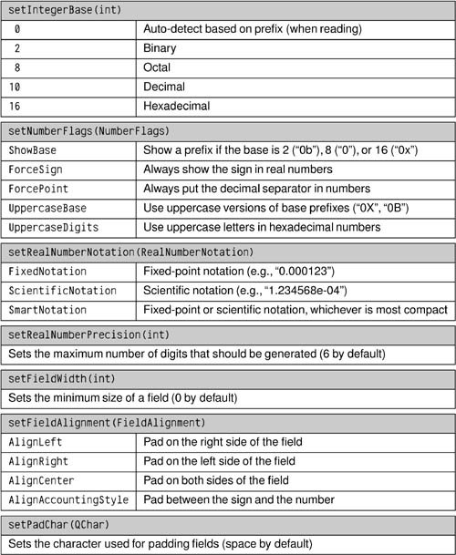

Reading and Writing TextWhile binary file formats are typically more compact than text-based formats, they are not human-readable or human-editable. In cases where this is an issue, we can use text formats instead. Qt provides the QTextStream class for reading and writing plain text files and for files using other text formats, such as HTML, XML, and source code. Handling XML files is covered separately in Chapter 15. QTextStream takes care of converting between Unicode and the system's local encoding or any other encoding, and transparently handles the different line-ending conventions used by different operating systems ("\r\n" on Windows, "\n" on Unix and Mac OS X). QTextStream uses the 16-bit QChar type as its fundamental unit of data. In addition to characters and strings, QTextStream supports C++'s basic numeric types, which it converts to and from strings. For example, the following code writes "Thomas M. Disch: 334\n" to the file sf-book.txt:
QFile file("sf-book.txt");
if (!file.open(QIODevice::WriteOnly)) {
cerr << "Cannot open file for writing: "
<< qPrintable(file.errorString()) << endl;
return;
}
QTextStream out(&file);
out << "Thomas M. Disch: " << 334 << endl;
Writing text is very easy, but reading text can be challenging, because textual data (unlike binary data written using QDataStream) is fundamentally ambiguous. Let's consider the following example: out << "Norway" << "Sweden"; If out is a QTextStream, the data that actually gets written is the string "NorwaySweden". We can't really expect the following code to read back the data correctly: in >> str1 >> str2; In fact, what happens is that str1 gets the whole word "NorwaySweden", and str2 gets nothing. This problem doesn't occur with QDataStream because it stores the length of each string in front of the character data. For complex file formats, a full-blown parser might be required. Such a parser might work by reading the data character-by-character using >> on a QChar, or line by line using QTextStream::readLine(). At the end of this section, we present two small examples, one that reads an input file line by line, and another that reads it character by character. For parsers that work on an entire text, we could read the complete file in one go using QTextStream::readAll() if we are not concerned about memory usage, or if we know the file will be small. By default, QTextStream uses the system's local encoding (for example, ISO 8859-1 or ISO 8859-15 in America and much of Europe) for reading and writing. This can be changed using setCodec() as follows:
stream.setCodec("UTF-8");
The UTF-8 encoding used in the example is a popular ASCII-compatible encoding that can represent the entire Unicode character set. For more information about Unicode and QTextStream's support for encodings, see Chapter 17 (Inter-nationalization). QTextStream has various options modeled after those offered by <iostream>. These can be set by passing special objects, called stream manipulators, on the stream to alter its state. The following example sets the showbase, upper-casedigits, and hex options before it outputs the integer 12345678, producing the text "0xBC614E": out << showbase << uppercasedigits << hex << 12345678; Options can also be set using member functions:
out.setNumberFlags(QTextStream::ShowBase
| QTextStream::UppercaseDigits);
out.setIntegerBase(16);
out << 12345678;
Figure 12.1. Functions to set QTextStream's optionsLike QDataStream, QTextStream operates on a QIODevice subclass, which can be a QFile, a QTemporaryFile, a QBuffer, a QProcess, a QTcpSocket, or a QUdpSocket. In addition, it can be used directly on a QString. For example: QString str; QTextStream(&str) << oct << 31 << " " << dec << 25 << endl; This makes the contents of str "37 25\ n", since the decimal number 31 is expressed as 37 in octal. In this case, we don't need to set an encoding on the stream, since QString is always Unicode. Let's look at a simple example of a text-based file format. In the Spreadsheet application described in Part I, we used a binary format for storing Spreadsheet data. The data consisted of a sequence of (row, column, formula) triples, one for every non-empty cell. Writing the data as text is straightforward; here is an extract from a revised version of Spreadsheet::writeFile():
QTextStream out(&file);
for (int row = 0; row < RowCount; ++row) {
for (int column = 0; column < ColumnCount; ++column) {
QString str = formula(row, column);
if (!str.isEmpty())
out << row << " " << column << " " << str << endl;
}
}
We have used a simple format, with each line representing one cell and with spaces between the row and the column and between the column and the formula. The formula can contain spaces, but we can assume that it contains no '\n' (which we use to terminate lines). Now let's look at the corresponding reading code:
QTextStream in(&file);
while (!in.atEnd()) {
QString line = in.readLine();
QStringList fields = line.split(' ');
if (fields.size() >= 3) {
int row = fields.takeFirst().toInt();
int column = fields.takeFirst().toInt();
setFormula(row, column, fields.join(' '));
}
}
We read in the Spreadsheet data one line at a time. The readLine() function removes the trailing '\n'. QString::split() returns a string list, having split its string wherever the separator it is given appears. For example, the line "5 19 Total value" results in the four-item list ["5", "19", "Total", "value"]. If we have at least three fields, we are ready to extract the data. The QStringList::takeFirst() function removes the first item in a list and returns the removed item. We use it to extract the row and column numbers. We don't perform any error checking; if we read a non-integer row or column value, QString::toInt() will return 0. When we call setFormula(), we must concatenate the remaining fields back into a single string. In our second QTextStream example, we will use a character by character approach to implement a program that reads in a text file and outputs the same text but with trailing spaces removed from lines and all tabs replaced by spaces. The program's work is done by the tidyFile() function:
void tidyFile(QIODevice *inDevice, QIODevice *outDevice)
{
QTextStream in(inDevice);
QTextStream out(outDevice);
const int TabSize = 8;
int endlCount = 0;
int spaceCount = 0;
int column = 0;
QChar ch;
while (!in.atEnd()) {
in >> ch;
if (ch == '\n') {
++endlCount;
spaceCount = 0;
column = 0;
} else if (ch == '\t') {
int size = TabSize - (column % TabSize);
spaceCount += size;
column += size;
} else if (ch == ' ') {
++spaceCount;
++column;
} else {
while (endlCount > 0) {
out << endl;
--endlCount;
column = 0;
}
while (spaceCount > 0) {
out << ' ';
--spaceCount;
++column;
}
out << ch;
++column;
}
}
out << endl;
}
We create an input and an output QTextStream based on the QIODevices that are passed to the function. We maintain three elements of state: one counting newlines, one counting spaces, and one marking the current column position in the current line (for converting the tabs to the correct number of spaces). The parsing is done in a while loop that iterates over every character in the input file, one at a time. The code is a bit subtle in places. For example, although we set TabSize to 8, we replace tabs with precisely enough spaces to pad to the next tab boundary, rather than crudely replacing each tab with eight spaces. If we get a newline, tab, or space, we simply update the state data. Only when we get another kind of character do we produce any output, and before writing the character we write any pending newlines and spaces (to respect blank lines and to preserve indentation) and update the state.
int main()
{
QFile inFile;
QFile outFile;
inFile.open(stdin, QFile::ReadOnly);
outFile.open(stdout, QFile::WriteOnly);
tidyFile(&inFile, &outFile);
return 0;
}
For this example, we don't need a QApplication object, because we are only using Qt's tool classes. See http://doc.trolltech.com/4.1/tools.html for the list of all tool classes. We have assumed that the program is used as a filter, for example: tidy < cool.cpp > cooler.cpp It would be easy to extend it to be able to handle file names given on the command line if they are given, and to filter cin to cout otherwise. Since this is a console application, it has a slightly different .pro file from those we have seen for GUI applications: TEMPLATE = app QT = core CONFIG += console CONFIG -= app_bundle SOURCES = tidy.cpp We only link against QtCore since we don't use any GUI functionality. Then we specify that we want to enable console output on Windows and that we don't want the application to live in a bundle on Mac OS X. For reading and writing plain ASCII files or ISO 8859-1 (Latin-1) files, it is possible to use QIODevice's API directly instead of using a QTextStream. It is rarely wise to do this since most applications need support for other encodings at some point or other, and only QTextStream provides seamless support for these. If you still want to write text directly to a QIODevice, you must explicitly specify the QIODevice::Text flag to the open() function, for example: file.open(QIODevice::WriteOnly | QIODevice::Text); When writing, this flag tells QIODevice to convert '\n' characters into "\r\n" sequences on Windows. When reading, this flag tells the device to ignore '\r' characters on all platforms. We can then assume that the end of each line is signified with a '\n' newline character regardless of the line-ending convention used by the operating system. |